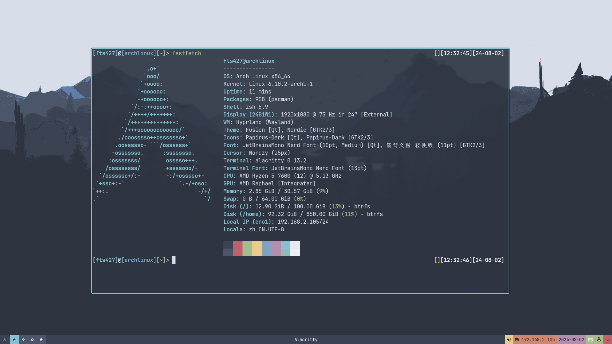

关于我¶
称呼¶
你可以叫我 FTS427 或 Huang FTS427
为什么这样称呼？这串字符在某种情况下可以呈现出我的真名，当然，Huang 是我的姓，这一眼就可以看出来
特性¶
声明
我先声明：我不属于 彩旗群体(LGBTQ+群体)，但是我尊重 ta 们，我希望你也可以尊重这个群体
你可以把我当作男生，也可以当做女生，或者无性别，我不在乎这些，如果你想用第三人称指代我，可以用 he(他) 来指代我，当然，你如果想用 she(她) 或者 it(它) 指代我也可以
是个宅，平时不太喜欢出门，但是我其实也很喜欢大自然
1.78 米左右，不算很高，刚刚好
家境比较贫寒，不过还好，我的金钱欲几乎没有
我的脾气比较温和，情绪也比较稳定，很少生气
有时候会显得比较个人主义，但是我正在尽力改正
喜好¶
没有喜欢吃的或喝的，喜欢过着很简单的慢节奏生活，我不太喜欢跑起来，这样会忽略生活中不起眼的美好
当然，也有喜欢的东西：
我爱开源社区，开源社区为每个人都提供便利；我喜欢研究 TUI 和 CLI 程序，这让我深入思考
我也爱着 Arch Linux ，她确实给我带来了很多便利
我平时也打游戏，不过不会玩太长时间，很少玩多人游戏
Minecraft Bedrock, Minecraft Java, Undertale, Soul Knight, Blue Archive(国际服), 浮岛物语
我是 Minecraft 正版玩家
还喜欢睡觉
在这里找到我¶
QQ: 2783629533
我已经不再使用 QQ 进行通讯，详情参见 此处
E-mail:
Xbox ID: Huang_FTS427
Skype: FTS427@outlook.com
开发环境¶
计算机¶

我的配置文件可以在 此处 找到
主力系统: Arch Linux
备用开发系统: Windows 10 Professional Workstation
桌面环境: Hyprland
CPU: AMD Ryzen 5 7600 (12) @ 5.13 GHz
运存: 32GB Kingston
Swap: 64GB
硬盘: 2TB Lexar
显示器: AOC 1920 x 1080
移动设备¶
机型: Lenovo TB-X306FC_PRC
OS: Lineage OS 20 Unofficial Build(Android 13)
CPU: MTK MT6765
运存: 4GB
存储空间: 64GB
Swap: 4GB
我的项目¶
ll_easier 用于迅速打包 LeviLamina 的 GitAction
QuantumLS-Studio 我的工作室，欢迎加入！
ZH-Server Open Source Project ZH-Server 开源组织
Luohe Senior School 非官方漯河高中的 Github 开源组织
梦想¶
我在朝着一个模糊的光亮奔跑...
职位¶
ZH-Server 的 不称职 腐竹（ &
Blessing Studio 中的一个无名小卒，经常干一些杂活 &
夏莱老师 &
一个友善的朋友 &
忙死的高中生（）